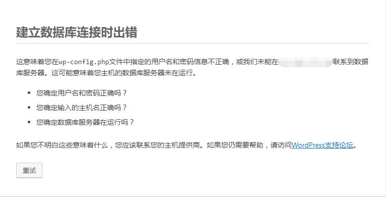

安装配置LAMP环境，即Linux+Apache+MySQL+PHP+phpmyadmin。LNMP分别代表 Linux、Nginx、MySQL、PHP。大同小异。
基本知识准备
- 查询是否已安装对应软件:
$ rpm -q <software>oryum info <software>。 - 软件安装后，服务是否启动:systemctl命令(system Control)
1
2
3
4
5systemctl status <software>[.service] //查看service状态
systemctl start <software>[.service] //启动service
systemctl enable <software>[.service] //开机启动service
systemctl stop <software>[.service] //停止service
systemctl restart <software>[.service] //重启service
.service不加，系统也会在env PATH中根据 software name 调用正确的service。
安装Apache
1 | yum -y install httpd //-y(yes)静默安装 |
安装成功后，执行command1
2
3
4systemctl status httpd //Apache service激活状态默认是inactive (dead)
systemctl start httpd
systemctl enable httpd
systemctl status httpd //启动后再查看Active: active (running)
然后在浏览器输入服务器公网IP或localhost(本机)，就应该能看到Apache HTTP server的test页面了。
Exception异常处理
以阿里云为例，如果出现服务器配置启动Apache后无法访问，使用本机去ping公网ip还可以ping通的case，是因为访问Apache服务被拦截了。可能是这两个原因导致的:
阿里云ECS实例的安全组规则没有设置对应的端口权限。进入
云服务器-实例-管理-本实例安全组-配置规则-添加安全组规则，在入方向添加80端口，授权对象0.0.0.0/0指所有请求。
这里也顺便加上几个通用的端口，以防后面的操作出现访问请求被拦截的情况。系统中的防火墙在运行状态，并未开放相应的端口。
1
systemctl status firewalld //如果防火墙是inactive (dead)未激活状态，就不会拦截任何端口，也可以保持这个状态
如果防火墙是active (running)运行状态，在防火墙中开放80端口，将 http 服务加入防火墙以允许外部访问1
firewall-cmd --add-service=http --permanent //–permanent参数表示这是一条永久防火墙规则，如果不加则重启系统后就没有这条规则了
对于自定义的端口（如81），也需要添加防火墙规则1
firewall-cmd --zone=public --add-port=81/tcp --permanent
重启 Firewalld 使该规则生效1
systemctl restart firewalld
关闭SELINUX，vim /etc/selinux/config，注释掉如下两句，添加最后一项1
2
3#SELINUX=enforcing #注释掉
#SELINUXTYPE=targeted #注释掉
SELINUX=disabled #增加
:wq! 保存退出
1 | setenforce 0 #使配置立即生效 |
安装MariaDB (MySQL的一个开源分支)
1 | yum -y install mariadb mariadb-server |
MariaDB安装成功后，启动MariaDB1
2systemctl start mariadb //启动MariaDB
systemctl enable mariadb //设置开机启动
设置MySQL root账户密码1
mysql_secure_installation
因是刚安装好，root密码未设置，看到下面这行直接回车即可，输Y开始设置root密码
Enter current password for root (enter for none):
Set root password? [Y/n]
提示输入新密码和重复输入新密码，重复输入两次后，出现更新密码成功提示，然后一路输入y/Y就可以。
New password:
Re-enter new password:
Password updated successfully!
Remove anonymous users? [Y/n] Y
Disallow root login remotely? [Y/n] Y
Remove test database and access to it? [Y/n] Y
Reload privilege tables now? [Y/n] Y
Thanks for using MariaDB!
设置root密码后，重启MariaDB生效1
systemctl restart mariadb
测试访问数据库：1
mysql -uroot -p
然后输入密码,登录成功后显示如下：
Welcome to the MariaDB monitor. Commands end with ; or \g.
Your MariaDB connection id is 2
Server version: 5.5.52-MariaDB MariaDB Server
Copyright (c) 2000, 2016, Oracle, MariaDB Corporation Ab and others.
Type ‘help;’ or ‘\h’ for help. Type ‘\c’ to clear the current input statement.
MariaDB [(none)]>
查看数据库服务器的数据库1
show databases;
最后输入exit;退出数据库
安装PHP以及PHP拓展
1 | yum -y install php php-mysql php-gd libjpeg* php-ldap php-odbc php-pear php-xml php-xmlrpc php-mbstring php-bcmath php-mhash |
安装完成后，重启Apache服务器1
systemctl restart httpd
在/www/html/目录新增index文件(查看Apache相关的配置在/etc/httpd/conf/httpd.conf里)，测试PHP安装结果1
vim /var/www/html/index.php // /www/html/为Apache服务器默认项目部署根路径
i insert输入如下内容，Esc退出编辑，:wq保存退出。1
2
3<?php
phpinfo();
?>
在浏览器中输入服务器地址，查看是否可以看到：
安装phpMyAdmin
1 | yum -y install phpmyadmin php-mcrypt |
phpMyAdmin 的默认安装目录是 /usr/share/phpMyAdmin，同时会在 Apache 的配置文件目录中自动创建虚拟主机配置文件 /etc/httpd/conf.d/phpMyAdmin.conf（区分大小写）。默认情况下，CentOS 7上的phpMyAdmin只允许从回环地址(127.0.0.1)访问。为了能远程连接，需要改动它的配置。1
vim /etc/httpd/conf.d/phpMyAdmin.conf
1 | <Directory /usr/share/phpMyAdmin/> |
重启Apache服务器，systemctl restart httpd
然后通过浏览器访问http://服务器ip地址/phpmyadmin
安装WordPress
如果你刚好打算以WordPress作为博客服务器，这个module刚好适合你。
通过命令下载WordPress，切换到任意目录下，一般源文件放在/usr/local/src，个人安装软件在/usr/local1
2
3cd /usr/local/src
wget https://wordpress.org/latest.tar.gz //English version,目前最新版是4.8.1
wget https://cn.wordpress.org/wordpress-4.8.1-zh_CN.tar.gz //简体中文(zh-Hans)
或者你先下载到本机，再通过FTP把压缩包上传到Linux 实例中。
在Apache项目部署跟目录解压缩wordpress1
2cd /var/www/html
tar -zxvf /usr/local/src/latest.tar.gz(wordpress-4.8.1.tar.gz/wordpress-4.8.1-zh_CN.tar.gz)
这样就把WordPress安装在网站子目录，而不是网站的根目录，方便网站的维护。这样文件内容就放在/var/www/html/wordpress/目录下，而不是/var/www/html/下。(建议这样做)
在浏览器输入’服务器实例公网IP/wordpress’，如59.110.137.229/wordpress/，进入到 WordPress 的安装页面
根据首页提示信息，进入数据库(通过Graphic或command)，创建一个名为wordpress的数据库名1
2
3CREATE DATABASE wordpress;
SHOW DATABASES;
EXIT;
然后开始，配置数据库信息，单击 提交。
数据库主机填localhost即可，我之前以为是填写服务器实例的公网IP，导致会出现下图错误。

如果出现下图错误，很有可能是文件权限不够。1
2
3
4
5$ cd /var/www/html
$ ll -a #查看解压后wordpress文件夹的权限
drwxr-xr-x 5 nobody 65534 4096 Aug 30 23:24 wordpress #权限不足
$ chmod 777 -R wordpress #权限
$ chown root:root -R wordpress #属组
修改权限，让文件可读可写可执行。
最后进入欢迎页面，填写你的个人信息，site、username、password、Email等。
通过主域名访问安装在子目录的WP
为了方便管理，把wordpress安装在子目录/var/www/html/subdirectory而不是网站根目录下/var/www/html，并且可以通过domain.com不是通过domain.com/subdirectory访问站点首页。首先确认你的WP内容是放在subdirectory目录下(e.g. wordpress文件夹)。
- Method I (Without URL change)。在根目录下创建
.htaccess文件夹，并把以下内容放进去，仅修改example.com和my_subdir，替换成你自己的公网IP(如59.110.137.229)或域名(如guodongdong.com.cn)和子目录(如worpress)1
2
3
4
5
6
7
8
9
10<IfModule mod_rewrite.c>
RewriteEngine on
RewriteCond %{HTTP_HOST} ^(www.)?example.com$
RewriteCond %{REQUEST_URI} !^/my_subdir/
RewriteCond %{REQUEST_FILENAME} !-f
RewriteCond %{REQUEST_FILENAME} !-d
RewriteRule ^(.*)$ /my_subdir/$1
RewriteCond %{HTTP_HOST} ^(www.)?example.com$
RewriteRule ^(/)?$ my_subdir/index.php [L]
</IfModule>
That’s all :) just so so
- Method II (With URL change)。
- 进入
WP后台仪表盘Dashboard-设置Setting-常规General-，
设置WordPress address (URL)为http://IP address/wordpress或http://(www).domain.com/wordpress
设置Site address (URL)为http://IP address或http://(www).domain.com
保存更改。 把
index.php和.htaccess两个文件从wordpress子目录复制(不要移动)到根目录1
2cp .htaccess index.php ..
cd .. #返回目录编辑index.php文件，
vim index.php1
require( dirname( __FILE__ ) . '/wordpress/wp-blog-header.php' ); #添加子目录名称/wordpress
如果你设置了固定链接Permalinks，点击保存更改更新你的Permalink结构。WordPress会自动更新你的
.htaccess文件。
最后通过你的公网IP或域名就可以直接访问博客主页了。WP官方配置链接。如果还是不行，建议把方法一和二 一起走一遍就可以了。
安装FTP
通过WP在线安装主题或更新插件时，WP会通过FTP协议获取访问网页服务器的权限。Entry
解决安装主题或更新插件时提示’未能找到WordPress内容目录（wp-content）’
在wp-config配置文件中添加如下内容(以我的根目录为’wordpress’为例):1
2
3
4
5define('FTP_BASE', 'wordpress'); #FTP_BASE：你的wordpress的安装的根目录
define('FTP_CONTENT_DIR', 'wordpress/wp-content'); #FTP_CONTENT_DIR：你的wordpress的内容目录
define('FTP_PLUGIN_DIR', 'wordpress/wp-content/plugins/'); #FTP_PLUGIN_DIR：你的wordpress的插件目录
define('FTP_THEMES_DIR', 'wordpress/wp-content/themes/'); #FTP_THEMES_DIR：你的wordpress的主题目录
define('FS_METHOD', 'direct'); #FS_METHOD：你的安装方法
保存修改，重新安装主题或更新插件，SUCCESS! 参考链接
去WordPress官网寻找自己喜欢的主题和合适的插件吧。
离线下载安装主题
不喜欢在线的主题或在线不能下载主题，把下载的主题或插件放在/wordpress/wp-content/themes|plugins下，进入个人站点控制台启用即可。